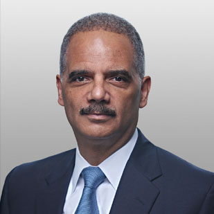

<div class="container">
	<div class="row">
        <div id="speaker-detail" class="col-lg-10 col-lg-offset-1">
            <div class="row">
            	<button title="Close (Esc)" type="button" class="mfp-close">×</button>
                
                <div class="col-md-5 col-lg-5 no-padding">
                    
                </div>
                    
                <div class="col-md-7 col-lg-7">
                    <h2>Eric <span>Holder</span></h2>
                    <p class="lead">Former Attorney General</p>
                    <!--
                    <ul class="social list-inline list-unstyled">
                    	<li><a href=""><i class="fa fa-2x fa-facebook-square"></i></a></li>
                        <li><a href=""><i class="fa fa-2x fa-twitter-square"></i></a></li>
                        <li><a href=""><i class="fa fa-2x fa-google-plus-square"></i></a></li>
                        <li><a href=""><i class="fa fa-2x fa-linkedin-square"></i></a></li>
                    </ul>
                    -->
                    
                    <div id="content">
                    	<p>Before his service as Attorney General, Mr. Holder maintained a wide-ranging investigations and litigation practice at Covington.
Among numerous significant engagements, he led the firm’s representation of a major multi-national agricultural company in
related civil, criminal, and investigative matters; acted as counsel to a special investigative committee of the board of directors of a
Fortune 50 technology company; successfully tried a complex discrimination lawsuit on behalf of a leading financial services
company; and represented several life sciences companies in litigation and investigations.</p>

<p>Mr. Holder served as Attorney General from February 2009 to April 2015. As the third longest serving Attorney General in U.S. history
and the first African American to hold that office, Mr. Holder is an internationally recognized leader across a broad range of
regulatory enforcement, criminal justice, and national security issues. In 2014, Time magazine named Mr. Holder to its list of 100
Most Influential People, noting that he had “worked tirelessly to ensure equal justice.”</p>

<p>Including his tenure as Attorney General, Mr. Holder has served in government for more than thirty years, having been appointed to
various positions requiring U.S. Senate confirmation by Presidents Obama, Clinton and Reagan.</p>
                    </div>
                </div>
            
            </div>
        </div>
    </div>
</div>